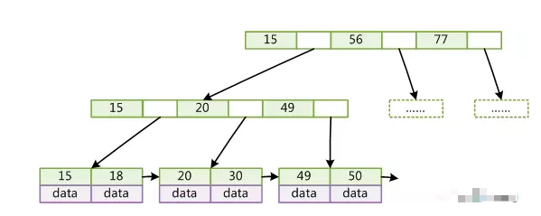

关于mysql联合索引的最左前缀原则以及b+tree
软件版本mysql5.7
根据官网的文档 https://dev.mysql.com/doc/refman/5.7/en/multiple-column-indexes.html
查询条件要符合最左原则才能使用到索引
首先说说联合索引的好处：
覆盖索引，这一点是最重要的，重所周知非主键索引会先查到主键索引的值再从主键索引上拿到想要的值，这样多一次查询索引下推。但是覆盖索引可以直接在非主键索引上拿到相应的值，减少一次查询。
在一张大表中如果有 (a,b,c)联合索引就等于同时加上了 (a) (ab) (abc) 三个索引减少了存储上的一部分的开销和操作开销
梯度漏斗，比如 select *from t where a = 1 and b = 2 and c = 3; 就等于在满足 a = 1 的一部分数据中过滤掉b = 2 的 再从 a = 1 and b = 2 过滤掉 c = 3 的，越多查询越高效。
到底啥是最左原则?
即最左优先，在检索数据时从联合索引的最左边开始匹配,类似于给(a,b,c)这三个字段加上联合索引就等于同时加上了 (a) (ab) (abc) 这三种组合的查询优化
举个栗子：
CREATE TABLE `user` ( `id` int(11) NOT NULL AUTO_INCREMENT, `name` varchar(25), `sex` varchar(25) , `city` varchar(25) , PRIMARY KEY (`id`) USING BTREE, INDEX `name`(`name`, `sex`, `city`) USING BTREE )
EXPLAIN select * from `user` where sex='';
这样是无法触发联合索引的，因为不符合最左原则，没有命中(a) (ab) (abc) 这种组合
+----+-------------+-------+------------+-------+---------------+------+---------+------+------+----------+--------------------------+ | id | select_type | table | partitions | type | possible_keys | key | key_len | ref | rows | filtered | Extra | +----+-------------+-------+------------+-------+---------------+------+---------+------+------+----------+--------------------------+ | 1 | SIMPLE | user | NULL | index | NULL | name | 309 | NULL | 3 | 33.33 | Using where; Using index | +----+-------------+-------+------------+-------+---------------+------+---------+------+------+----------+--------------------------+ 1 row in set (0.02 sec)
另外使用执行计划一定要看结果，只有possible_keys有值的情况下才是命中索引
还有一点就是where条件的顺序是否会影响索引的命中，就是本来(ab)的组合，故意写where语句时写成(ba)，答案是没有影响，只要遵循了索引的最左原则即可，至少在mysql5.7测试没有问题。
最后，谈谈索引的底层数据结构b+tree
我们知道BTREE 每个节点都是一个二元数组: [key, data]，所有节点都可以存储数据。key为索引key,data为除key之外的数据。
查找算法：首先从根节点进行二分查找，如果找到则返回对应节点的data，否则对相应区间的指针指向的节点递归进行查找，直到找到节点或未找到节点返回空指针
B+Tree有以下不同点：非叶子节点不存储data，只存储索引key；只有叶子节点才存储data，而Mysql中B+Tree：在经典B+Tree的基础上进行了优化，增加了顺序访问指针。在B+Tree的每个叶子节点增加一个指向相邻叶子节点的指针，就形成了带有顺序访问指针的B+Tree。这样就提高了区间访问性能：请见下图，如果要查询key为从18到49的所有数据记录，当找到18后，只需顺着节点和指针顺序遍历就可
